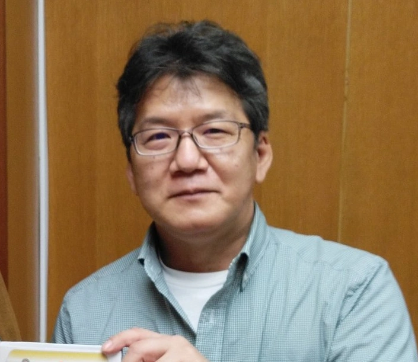

George Morikawa
Es un famoso mangaka de japón y también el dueño de un gimnasio de boxeo, el cual ocasionalmente va a entrenar y asistir a boxeadores.
Nació en Tokio en enero de 1966 y empezó su carrera como mangaka a los 17 años de edad, publicando su primera manga mientras estaba estudiando en la secundaria. Desde entonces ha trabajado en varias obras a lo largo del tiempo, hasta que en 1989 decidió crear uno de los mangas más largos y reconocidos llamado Hajime no Ippo, el cual todavía sigue en publicación.